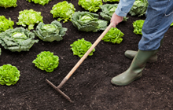

<!--  Orientacion Familiar  -->
<li class="entry one-fourth diplomados familia">
                <a class="entry-image" href="portafolio-orientacionFamiliar.html" title="Dinámica Familiar"></a>
                <a class="entry-meta" href="portafolio-orientacionFamiliar.html">
                    <h4 class="entry-title">Orientación Familiar</h4>
                </a>
            </li>

<!--  Sexualidad  -->
<li class="entry one-fourth cursos salud familia">
                <a class="entry-image" href="portafolio-sexualidad.html" title="Sexualidad Humana"></a>
                <a class="entry-meta" href="portafolio-sexualidad.html">
                    <h4 class="entry-title">Sexualidad</h4>
                </a>
            </li>

<!--  Como conducir una entrevista de consejeria  -->
<li class="entry one-fourth cursos teologia educacion familia">
                <a class="entry-image" href="portafolio-entrevista.html" title="Cómo conducir una entrevista de consejería"></a>
                <a class="entry-meta" href="portafolio-entrevista.html">
                    <h4 class="entry-title">Cómo conducir una entrevista de consejería</h4>
                </a>
            </li>

<!--  Consejeria familiar: Vida en pareja  -->
<li class="entry one-fourth cursos familia" >
                <a class="entry-image" href="portafolio-noviazgo.html" title=""></a>
                <a class="entry-meta" href="portafolio-noviazgo.html">
                    <h4 class="entry-title">Consejería familiar: Vida en Pareja</h4>
                </a>
            </li>

<!--  Fundamentos firmes para una familia contemporánea  -->
<li class="entry one-fourth cursos familia">
                <a class="entry-image" href="portafolio-familia.html" title=""></a>
                <a class="entry-meta" href="portafolio-familia.html">
                    <h4 class="entry-title">Fundamentos firmes para la familia contemporánea</h4>
                </a>
            </li>

<!--  Como hacer un huerto familiar ecologico  -->
<li class="entry one-fourth cursos familia">
                <a class="entry-image" href="portafolio-huerto.html" title=""></a>
                <a class="entry-meta" href="portafolio-huerto.html">
                    <h4 class="entry-title">Cómo hacer un huerto familiar ecológico </h4>
                </a>
            </li>